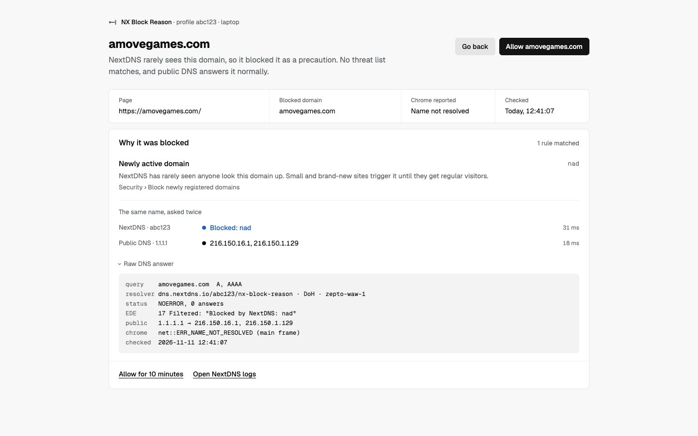
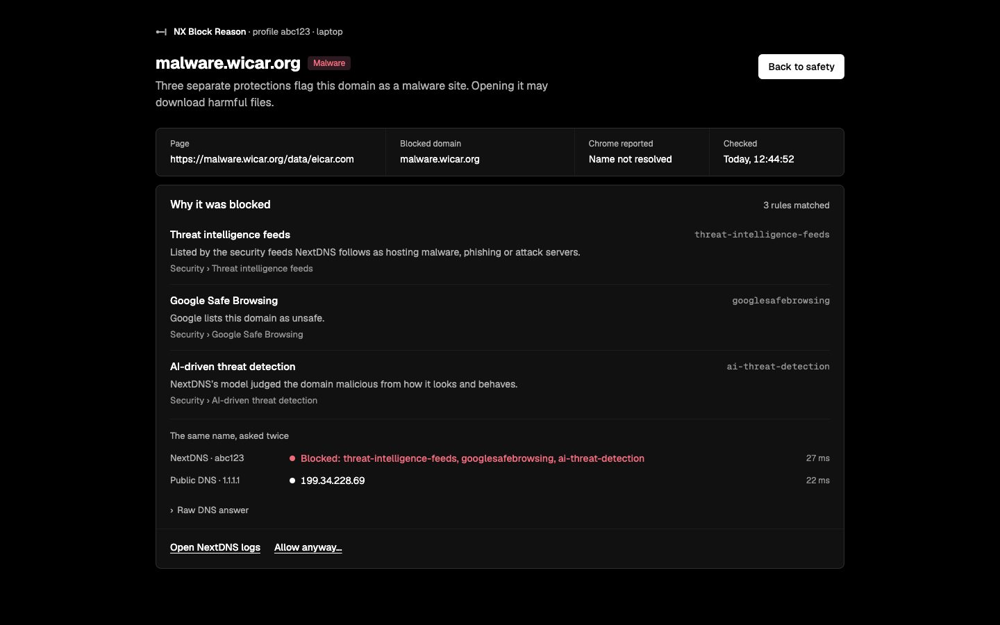
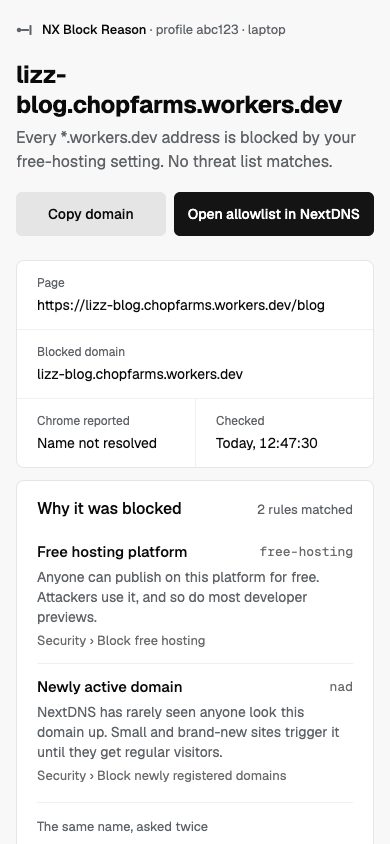
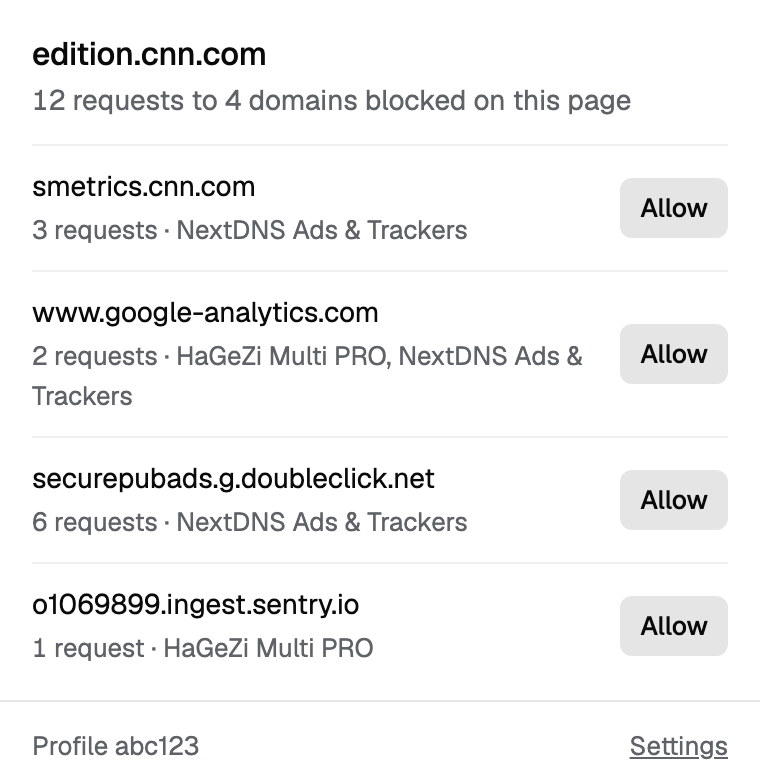
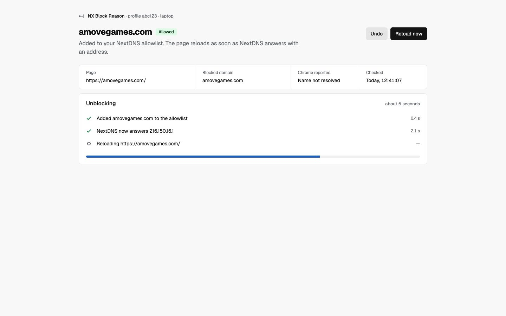
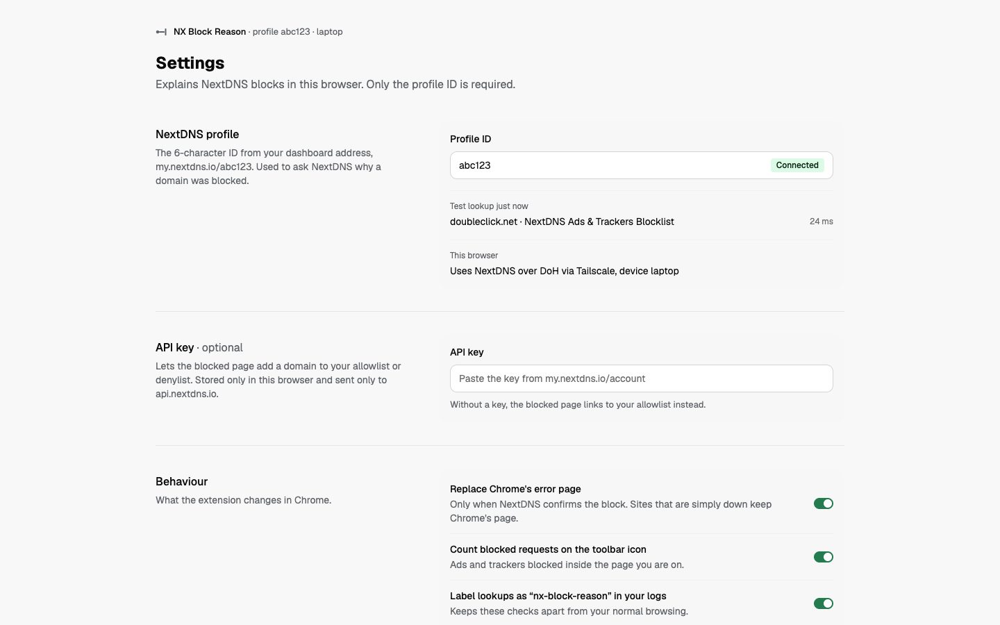

amovegames.com, blocked as a newly active domain. The domain is the title, with the reason in one sentence under it. The one blue mark is NextDNS's answer, shown next to public DNS. With an API key, Allow is the main button.

malware.wicar.org, matched by three protections. Red appears only on the Malware tag and on NextDNS's answer. Back to safety is the only button; Allow anyway is a text link at the bottom.

Your own workers.dev preview, blocked as free hosting. Without a key the buttons copy the domain and open your allowlist.

Requests blocked inside the current page, one row per domain, with how many requests and which list.

The page waits until NextDNS answers with an address, then reloads by itself. Undo is one click.

The profile ID is required; the API key is optional. A test lookup proves the connection.
